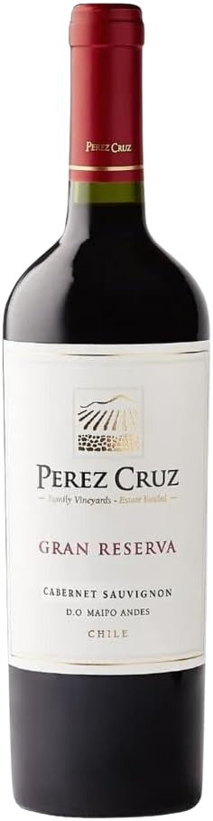

Perez Cruz Gran Reserva Cabernet Sauvignon
Safra: 2023
Tipo: Tinto
Uva: Cabernet Sauvignon
País: Chile
Região: Maipo Andes
Produtor: Viña Perez Cruz
Volume: 750 ml
Teor Alcoólico: 14%
Temperatura de Serviço: 16°C a 18°C
Descrição
Um vinho robusto e elegante, de coloração rubi intensa. Apresenta aromas complexos de frutas negras maduras, cassis, notas de tabaco, chocolate amargo e toques de baunilha. No paladar é encorpado, com taninos aveludados e excelente persistência.
Harmonização
- Cordeiro assado com ervas
- Bife de chorizo
- Polenta com ragu de carne
- Costela bovina assada
- Queijos duros e curados
R$ 79,90